Um curso de desenvolvimento de sistemas é como um guia que te ensina a construir coisas legais no computador, como aplicativos, sites e programas. Você aprende a escrever códigos, a organizar informações em bancos de dados e a tornar tudo seguro para as pessoas usarem.
Minhas primeiras impressões do curso, sinceramente foi que eu tinha feito a escolha errada. A apresentação do curso me deixou assustada e consequentemente duvidei do meu potencial. Entretanto ao decorrer do tempo comecei a gostar da rotina e principalmete gostar das atividades, mesmo que as vezes surtasse com os códigos.
Ao decorrer dos primeiros dois meses, fizemos diversas Dinâmicas e apresentações, e o que mais me marcou foi quando produzimos aviões de papel em grupo com tempo contado. Foi bem divertido e consegui extrair dicas e aprendizados valiosos.
Na minha visão a minha adpatação foi boa, ou seja, acho que me adaptei muito bem. Mesmo que cansativo, gosto da rotina movimentada do nosso curso.
Minha principal dificuldade nos primeiros meses foi acompanhar o ritmo dos professores. -spoiler, ainda não consigo acompanhar...
Nesses meses produzimos muitas atividades, como a desmontagem e montagens de computadores, diversas apresentações e semáforos na plataforma tinkercad, que particularmente foi uma das atividades mais chatinhas que fiz.
Certamente o foco tem sido uma das partes que mais tive dificuldade, as vezes não entendia algumas atividades e algumas explicações.
Seguindo a mesma linha de raciocinio, minha principal dificuldade foi o python, acho muuiitoo confuso e sinceramente não gosto muito de fazer.
Nesses últimos meses, mesmo com dificuldades estou gostando muito do curso e nesse momento não trocaria ele.
Produzimos muitos sites, bastante figma's, python e eu to gostando, porém ainda sinto muita dificuldade em juntar o python com o html e ainda não aprendi a mexer no github.
Finalizando, minhas metas para depois das férias é focar mais com certeza, ter mais paciencia.